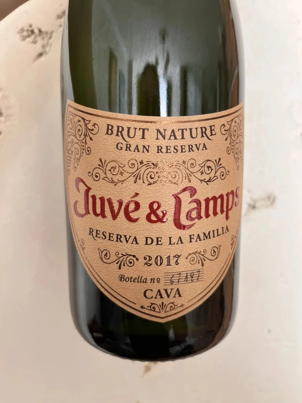

- Type
- White Sparkling, Brut nature
- Producer
- Juvé y Camps
- Vintage
- 2017
- Location
- Spain, Cava
- Grapes
- Macabeo, Xarel-lo, Parellada
- Alcohol
- 12
- Sugar
- 2.7
- Price
- 599 UAH, 521 UAH
- Cellar
- N/A
Ratings
2022-06-12 - 7.50
Haven’t tasted this wine for more than 2 years, and tasting this particular vintage for the first time. In my memory this was a powerful blockbuster, but in reality it’s calm and straight-forward. Well made, yet with non-beginner-friendly bouquet and palate. Lots of plastic on the background of pear and apples. There are notes of bread, but this bread is as stale and dry as my exs’ heart (mandatory joke even though I don’t have an ex). Good acidity, precise, but lacks volume and complexity. All-in-all, good Cava in the old-school style.
2022-11-22 - 7.50
Pretty much the same experience as the last time. Not simple (as in non-beginner-friendly) Cava in the old-school style. Plastic, dry toast, and pear. Precise, well-made and tasty, yet it lacks volume and complexity.